C-SHAP vs SHAP: evaluation report
1. Replication of the original notebook
Breast Cancer, random forest, 20 test instances, Kernel SHAP on predict_proba. vs_exact columns compare against exact interventional SHAP with the full training background.
| l1_reg | label | background_rows | total_s | nonzero_per_instance | vs_exact_inst_rel_l1 | vs_exact_inst_spearman | vs_exact_global_pearson | nb_pearson_standard_vs_cshap |
|---|---|---|---|---|---|---|---|---|
| shap-default | Standard SHAP (100 random rows) | 100 | 15.857 | 10 | 0.382 | 0.814 | 0.988 | 0.997 |
| shap-default | C-SHAP (20 K-means centroids) | 20 | 3.179 | 10 | 0.478 | 0.804 | 0.991 | 0.997 |
| shap-default | 20 random rows (size-matched control) | 20 | 3.188 | 10 | 0.433 | 0.795 | 0.986 | 0.997 |
| none | Standard SHAP (100 random rows) | 100 | 14.162 | 30 | 0.069 | 0.973 | 1.000 | 0.999 |
| none | C-SHAP (20 K-means centroids) | 20 | 3.080 | 30 | 0.309 | 0.920 | 0.998 | 0.999 |
| none | 20 random rows (size-matched control) | 20 | 3.054 | 30 | 0.205 | 0.915 | 0.996 | 0.999 |
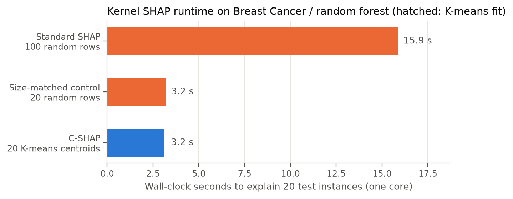
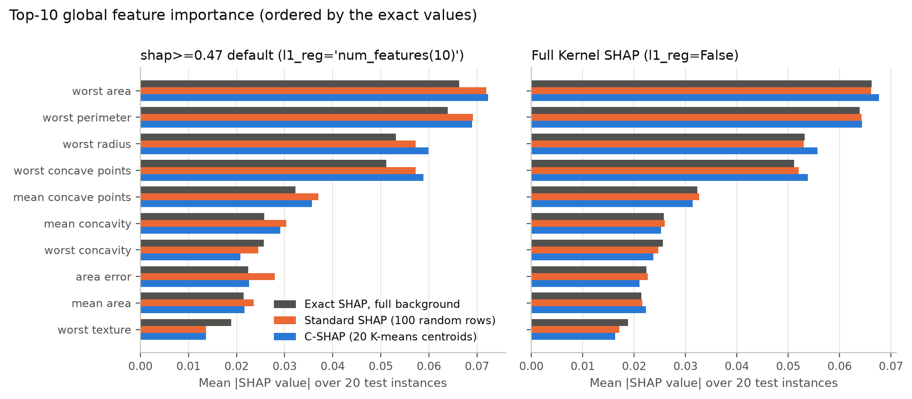
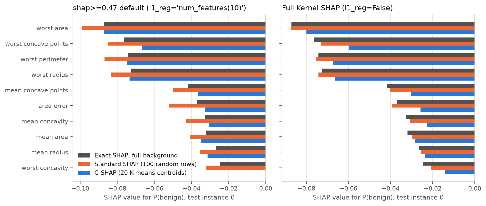
2. Background-compression error (exact SHAP)
Mean per-instance relative L1 error at k = 20 (100 instances x 10 seeds):
| method | dataset | model | kmeans | kmeans_weighted | random |
|---|---|---|---|---|---|
| Breast Cancer Wisconsin | Gradient boosting | 0.296 | 0.110 | 0.176 | |
| Breast Cancer Wisconsin | Logistic regression | 0.741 | 0.000 | 0.245 | |
| Breast Cancer Wisconsin | Random forest | 0.316 | 0.092 | 0.156 | |
| MAGIC Gamma Telescope | Gradient boosting | 0.479 | 0.147 | 0.261 | |
| MAGIC Gamma Telescope | Logistic regression | 0.975 | 0.000 | 0.259 | |
| MAGIC Gamma Telescope | Random forest | 0.504 | 0.208 | 0.300 | |
| Spambase | Gradient boosting | 0.376 | 0.809 | 0.289 | |
| Spambase | Logistic regression | 1.219 | 0.000 | 0.542 | |
| Spambase | Random forest | 0.305 | 0.618 | 0.325 |
Paired Wilcoxon tests at k = 20 (Holm-adjusted over all k)
| dataset | model | method_a | method_b | mean_diff | frac_a_better | rank_biserial | p_holm |
|---|---|---|---|---|---|---|---|
| Breast Cancer Wisconsin | Gradient boosting | kmeans | random | 0.12 | 0 | 1 | 6.31e-16 |
| Breast Cancer Wisconsin | Gradient boosting | kmeans_weighted | random | -0.066 | 1 | -1 | 6.31e-16 |
| Breast Cancer Wisconsin | Gradient boosting | kmeans_weighted | kmeans | -0.186 | 1 | -1 | 6.31e-16 |
| Breast Cancer Wisconsin | Logistic regression | kmeans | random | 0.496 | 0 | 1 | 6.31e-16 |
| Breast Cancer Wisconsin | Logistic regression | kmeans_weighted | random | -0.245 | 1 | -1 | 6.31e-16 |
| Breast Cancer Wisconsin | Logistic regression | kmeans_weighted | kmeans | -0.741 | 1 | -1 | 6.31e-16 |
| Breast Cancer Wisconsin | Random forest | kmeans | random | 0.16 | 0 | 1 | 6.31e-16 |
| Breast Cancer Wisconsin | Random forest | kmeans_weighted | random | -0.0641 | 0.98 | -0.998 | 6.31e-16 |
| Breast Cancer Wisconsin | Random forest | kmeans_weighted | kmeans | -0.225 | 1 | -1 | 6.31e-16 |
| MAGIC Gamma Telescope | Gradient boosting | kmeans | random | 0.219 | 0 | 1 | 6.31e-16 |
| MAGIC Gamma Telescope | Gradient boosting | kmeans_weighted | random | -0.114 | 0.99 | -0.999 | 6.31e-16 |
| MAGIC Gamma Telescope | Gradient boosting | kmeans_weighted | kmeans | -0.332 | 1 | -1 | 6.31e-16 |
| MAGIC Gamma Telescope | Logistic regression | kmeans | random | 0.716 | 0 | 1 | 6.31e-16 |
| MAGIC Gamma Telescope | Logistic regression | kmeans_weighted | random | -0.259 | 1 | -1 | 6.31e-16 |
| MAGIC Gamma Telescope | Logistic regression | kmeans_weighted | kmeans | -0.975 | 1 | -1 | 6.31e-16 |
| MAGIC Gamma Telescope | Random forest | kmeans | random | 0.204 | 0 | 1 | 6.31e-16 |
| MAGIC Gamma Telescope | Random forest | kmeans_weighted | random | -0.0916 | 0.91 | -0.935 | 5.86e-15 |
| MAGIC Gamma Telescope | Random forest | kmeans_weighted | kmeans | -0.296 | 1 | -1 | 6.31e-16 |
| Spambase | Gradient boosting | kmeans | random | 0.0865 | 0 | 1 | 6.31e-16 |
| Spambase | Gradient boosting | kmeans_weighted | random | 0.519 | 0 | 1 | 6.31e-16 |
| Spambase | Gradient boosting | kmeans_weighted | kmeans | 0.433 | 0 | 1 | 6.31e-16 |
| Spambase | Logistic regression | kmeans | random | 0.677 | 0 | 1 | 6.31e-16 |
| Spambase | Logistic regression | kmeans_weighted | random | -0.542 | 1 | -1 | 6.31e-16 |
| Spambase | Logistic regression | kmeans_weighted | kmeans | -1.22 | 1 | -1 | 6.31e-16 |
| Spambase | Random forest | kmeans | random | -0.0206 | 0.71 | -0.648 | 1.09e-07 |
| Spambase | Random forest | kmeans_weighted | random | 0.293 | 0.01 | 1 | 6.31e-16 |
| Spambase | Random forest | kmeans_weighted | kmeans | 0.313 | 0 | 1 | 6.31e-16 |
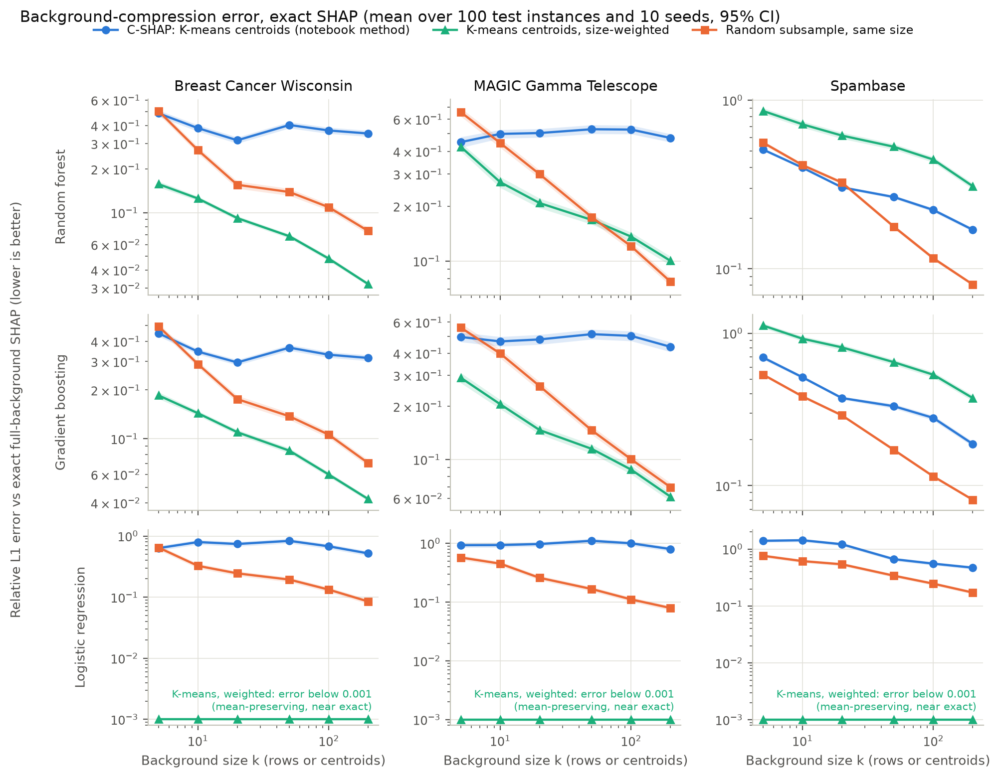
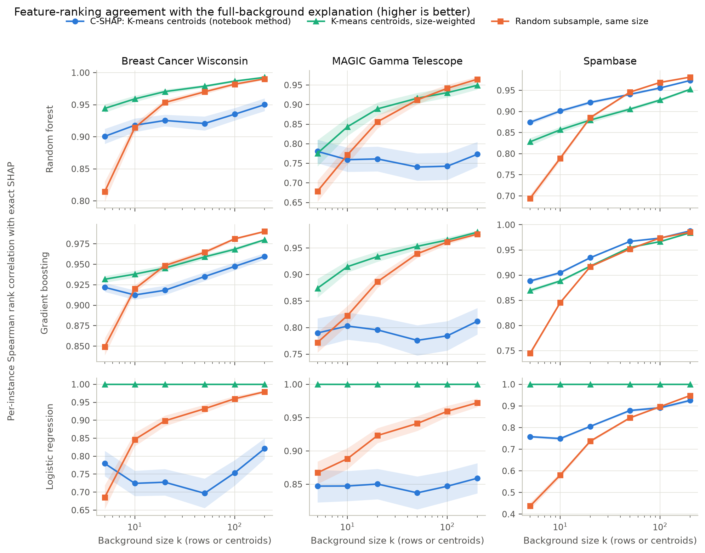
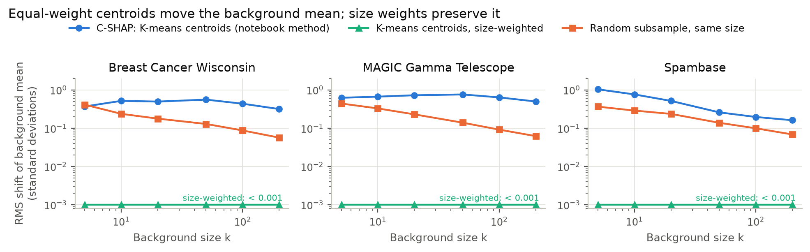
3. End-to-end Kernel SHAP
k = 20, 50 instances x 3 seeds. explain_s is CPU seconds per instance measured while other jobs shared the machine.
| dataset | model | method | explain_s | fit_s | total_rel_l1 | background_rel_l1 | sampling_rel_l1 | total_spearman |
|---|---|---|---|---|---|---|---|---|
| Breast Cancer Wisconsin | Gradient boosting | kmeans | 0.088 | 0.062 | 0.237 | 0.231 | 0.029 | 0.917 |
| Breast Cancer Wisconsin | Gradient boosting | kmeans_weighted | 0.083 | 0.037 | 0.108 | 0.099 | 0.029 | 0.936 |
| Breast Cancer Wisconsin | Gradient boosting | random | 0.081 | 0.001 | 0.197 | 0.191 | 0.025 | 0.942 |
| Breast Cancer Wisconsin | Logistic regression | kmeans | 0.046 | 0.086 | 0.601 | 0.601 | 0.000 | 0.745 |
| Breast Cancer Wisconsin | Logistic regression | kmeans_weighted | 0.053 | 0.144 | 0.000 | 0.000 | 0.000 | 1.000 |
| Breast Cancer Wisconsin | Logistic regression | random | 0.052 | 0.001 | 0.192 | 0.192 | 0.000 | 0.922 |
| Breast Cancer Wisconsin | Random forest | kmeans | 0.225 | 0.079 | 0.240 | 0.235 | 0.031 | 0.920 |
| Breast Cancer Wisconsin | Random forest | kmeans_weighted | 0.198 | 0.062 | 0.093 | 0.085 | 0.030 | 0.961 |
| Breast Cancer Wisconsin | Random forest | random | 0.218 | 0.001 | 0.189 | 0.184 | 0.030 | 0.942 |
| MAGIC Gamma Telescope | Gradient boosting | kmeans | 0.026 | 0.109 | 0.490 | 0.490 | 0.000 | 0.794 |
| MAGIC Gamma Telescope | Gradient boosting | kmeans_weighted | 0.032 | 0.124 | 0.158 | 0.158 | 0.000 | 0.931 |
| MAGIC Gamma Telescope | Gradient boosting | random | 0.031 | 0.001 | 0.203 | 0.203 | 0.000 | 0.903 |
| MAGIC Gamma Telescope | Logistic regression | kmeans | 0.014 | 0.117 | 0.947 | 0.947 | 0.000 | 0.850 |
| MAGIC Gamma Telescope | Logistic regression | kmeans_weighted | 0.014 | 0.171 | 0.000 | 0.000 | 0.000 | 1.000 |
| MAGIC Gamma Telescope | Logistic regression | random | 0.013 | 0.001 | 0.237 | 0.237 | 0.000 | 0.920 |
| MAGIC Gamma Telescope | Random forest | kmeans | 0.261 | 0.073 | 0.512 | 0.512 | 0.000 | 0.765 |
| MAGIC Gamma Telescope | Random forest | kmeans_weighted | 0.256 | 0.114 | 0.207 | 0.207 | 0.000 | 0.890 |
| MAGIC Gamma Telescope | Random forest | random | 0.288 | 0.001 | 0.251 | 0.251 | 0.000 | 0.886 |
| Spambase | Gradient boosting | kmeans | 0.134 | 0.133 | 0.394 | 0.378 | 0.035 | 0.847 |
| Spambase | Gradient boosting | kmeans_weighted | 0.128 | 0.098 | 0.837 | 0.812 | 0.047 | 0.767 |
| Spambase | Gradient boosting | random | 0.128 | 0.001 | 0.283 | 0.272 | 0.025 | 0.820 |
| Spambase | Logistic regression | kmeans | 0.063 | 0.053 | 1.126 | 1.126 | 0.000 | 0.799 |
| Spambase | Logistic regression | kmeans_weighted | 0.052 | 0.095 | 0.000 | 0.000 | 0.000 | 1.000 |
| Spambase | Logistic regression | random | 0.060 | 0.001 | 0.607 | 0.607 | 0.000 | 0.714 |
| Spambase | Random forest | kmeans | 0.511 | 0.142 | 0.337 | 0.311 | 0.073 | 0.861 |
| Spambase | Random forest | kmeans_weighted | 0.502 | 0.123 | 0.644 | 0.612 | 0.077 | 0.814 |
| Spambase | Random forest | random | 0.457 | 0.001 | 0.280 | 0.261 | 0.060 | 0.846 |
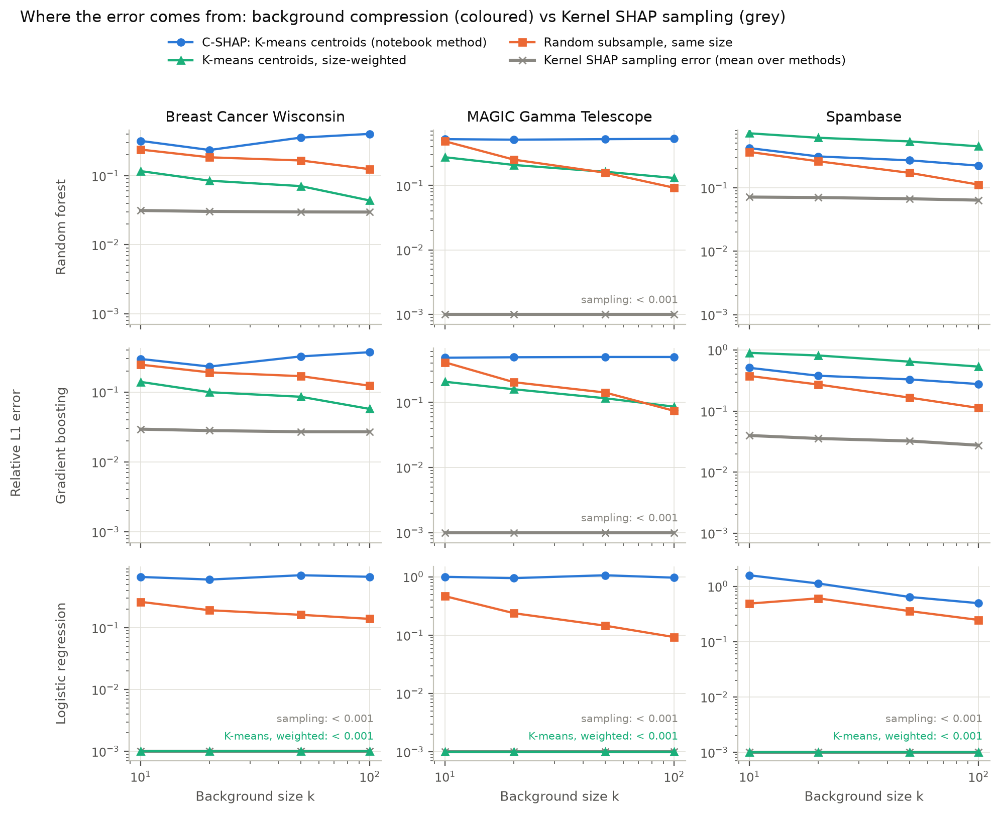
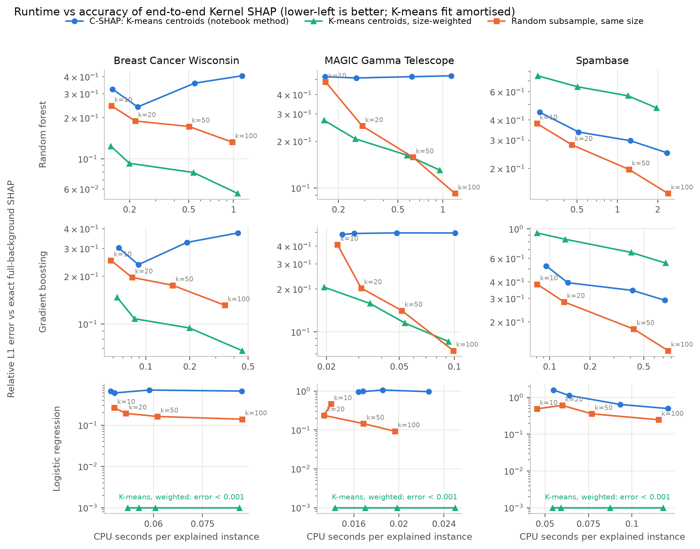
4. Deletion / insertion faithfulness
Insertion AUC minus deletion AUC (higher is better):
| method | dataset | model | exact | kmeans | kmeans_weighted | random | random_k100 | random_order |
|---|---|---|---|---|---|---|---|---|
| Breast Cancer Wisconsin | Gradient boosting | 6.044 | 5.963 | 5.989 | 5.923 | 6.033 | -0.041 | |
| Breast Cancer Wisconsin | Logistic regression | 7.856 | 7.112 | 7.856 | 7.620 | 7.823 | -0.106 | |
| Breast Cancer Wisconsin | Random forest | 0.318 | 0.313 | 0.316 | 0.309 | 0.316 | -0.006 | |
| MAGIC Gamma Telescope | Gradient boosting | 2.791 | 2.643 | 2.759 | 2.742 | 2.781 | 0.005 | |
| MAGIC Gamma Telescope | Logistic regression | 2.308 | 1.929 | 2.308 | 2.220 | 2.309 | -0.120 | |
| MAGIC Gamma Telescope | Random forest | 0.315 | 0.289 | 0.307 | 0.306 | 0.314 | -0.005 | |
| Spambase | Gradient boosting | 4.771 | 4.665 | 4.435 | 4.671 | 4.753 | 0.103 | |
| Spambase | Logistic regression | 13.352 | 12.428 | 13.352 | 12.281 | 13.101 | -0.040 | |
| Spambase | Random forest | 0.470 | 0.458 | 0.435 | 0.457 | 0.466 | 0.010 |
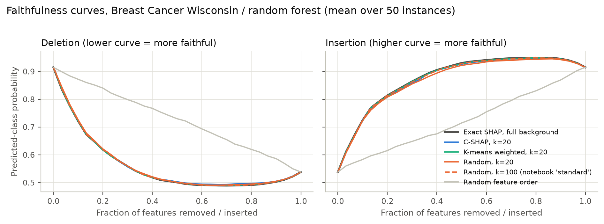
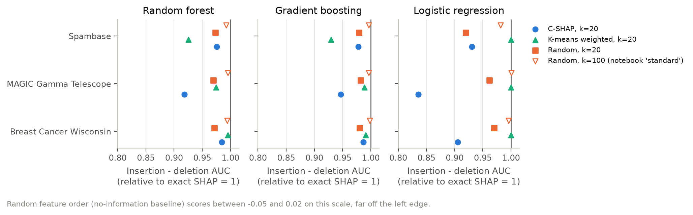
5. Stability across seeds
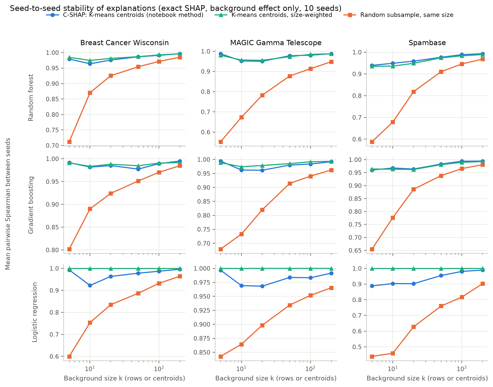
End-to-end Kernel SHAP, k = 20, mean pairwise per-instance Spearman:
| method | dataset | model | kmeans | kmeans_weighted | random |
|---|---|---|---|---|---|
| Breast Cancer Wisconsin | Gradient boosting | 0.951 | 0.936 | 0.900 | |
| Breast Cancer Wisconsin | Logistic regression | 0.988 | 1.000 | 0.856 | |
| Breast Cancer Wisconsin | Random forest | 0.959 | 0.961 | 0.901 | |
| MAGIC Gamma Telescope | Gradient boosting | 0.976 | 0.976 | 0.870 | |
| MAGIC Gamma Telescope | Logistic regression | 0.971 | 1.000 | 0.897 | |
| MAGIC Gamma Telescope | Random forest | 0.965 | 0.964 | 0.824 | |
| Spambase | Gradient boosting | 0.816 | 0.750 | 0.780 | |
| Spambase | Logistic regression | 0.874 | 1.000 | 0.712 | |
| Spambase | Random forest | 0.851 | 0.847 | 0.773 |
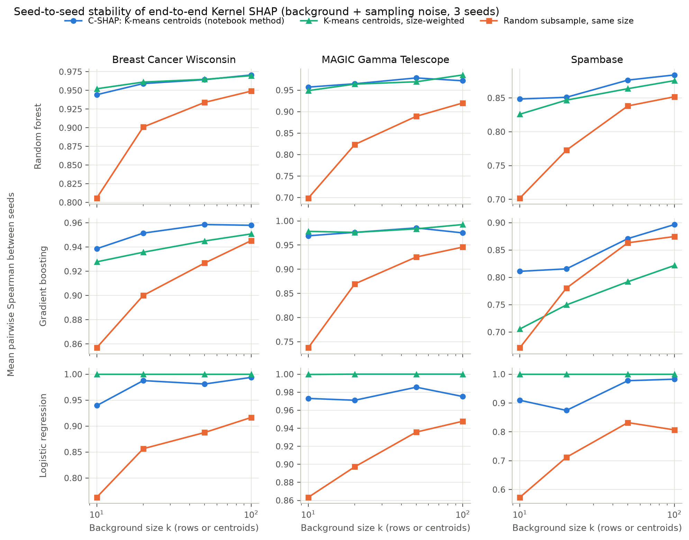
6. Runtime scaling (single core)
| dataset | k | n_features | full_background | explain_s_per_instance | kmeans_fit_s |
|---|---|---|---|---|---|
| Breast Cancer Wisconsin | 5 | 30 | False | 0.137 | 0.033 |
| Breast Cancer Wisconsin | 10 | 30 | False | 0.132 | 0.028 |
| Breast Cancer Wisconsin | 20 | 30 | False | 0.205 | 0.029 |
| Breast Cancer Wisconsin | 50 | 30 | False | 0.425 | 0.066 |
| Breast Cancer Wisconsin | 100 | 30 | False | 0.984 | 0.132 |
| Breast Cancer Wisconsin | 200 | 30 | False | 1.937 | 0.200 |
| Breast Cancer Wisconsin | 455 | 30 | True | 4.174 | 0.000 |
| MAGIC Gamma Telescope | 5 | 10 | False | 0.083 | 0.027 |
| MAGIC Gamma Telescope | 10 | 10 | False | 0.133 | 0.037 |
| MAGIC Gamma Telescope | 20 | 10 | False | 0.239 | 0.073 |
| MAGIC Gamma Telescope | 50 | 10 | False | 0.507 | 0.135 |
| MAGIC Gamma Telescope | 100 | 10 | False | 0.974 | 0.228 |
| MAGIC Gamma Telescope | 200 | 10 | False | 2.067 | 0.504 |
| MAGIC Gamma Telescope | 500 | 10 | False | 5.128 | 1.136 |
| MAGIC Gamma Telescope | 1000 | 10 | False | 10.248 | 2.072 |
| MAGIC Gamma Telescope | 2000 | 10 | True | 20.841 | 0.000 |
| Spambase | 5 | 57 | False | 0.122 | 0.053 |
| Spambase | 10 | 57 | False | 0.196 | 0.080 |
| Spambase | 20 | 57 | False | 0.408 | 0.118 |
| Spambase | 50 | 57 | False | 0.950 | 0.224 |
| Spambase | 100 | 57 | False | 2.025 | 0.396 |
| Spambase | 200 | 57 | False | 4.080 | 0.710 |
| Spambase | 500 | 57 | False | 10.850 | 1.336 |
| Spambase | 1000 | 57 | False | 22.986 | 2.755 |
| Spambase | 2000 | 57 | True | 46.110 | 0.000 |
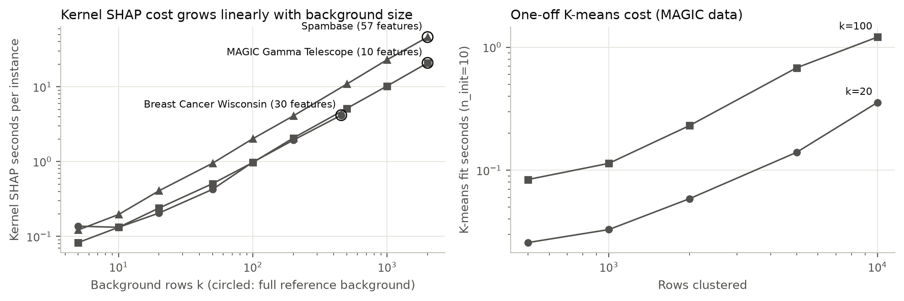